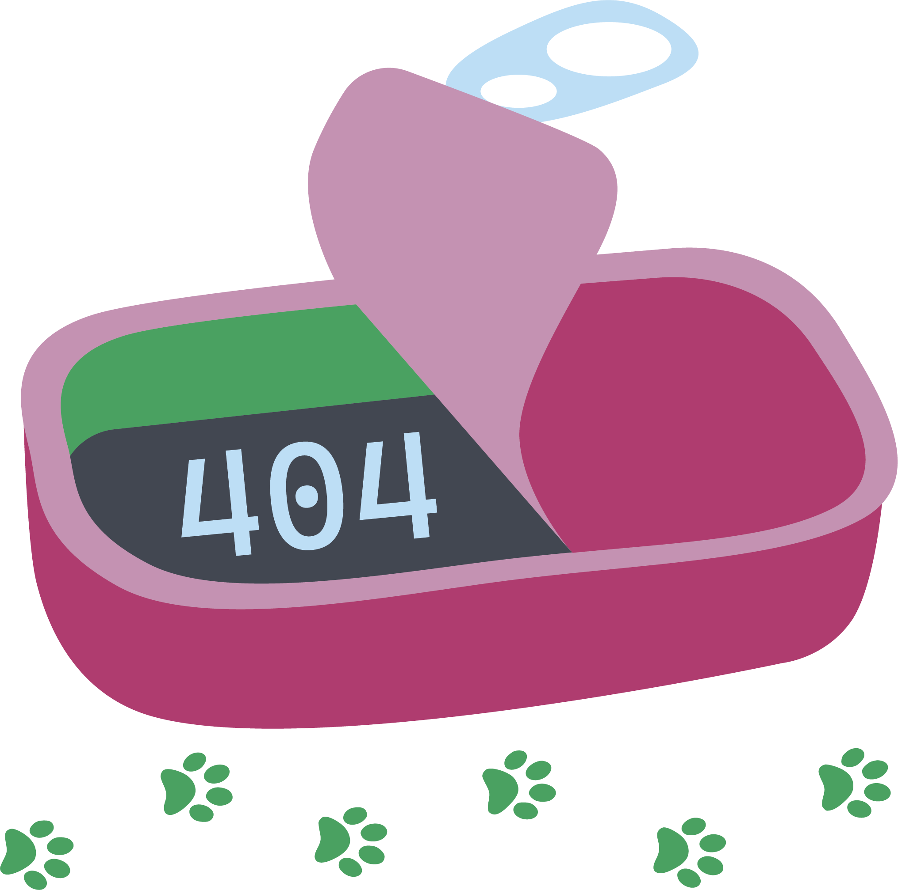

¡Gatástrofe! Alguien se comió esta página.
Parece que esta página fue devorada antes de que llegaras. Prometemos llenar esta lata de nuevo pronto. Hasta entonces, caza al gato y vuelve al inicio para encuentrar algo sabroso.
